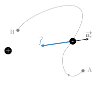
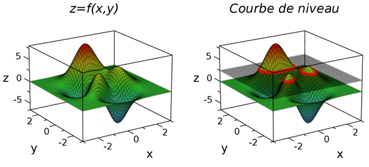
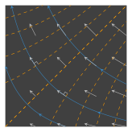
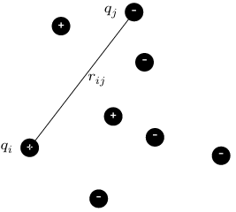

Énergie d’interaction entre deux charges ponctuelles
Soient deux charges \(q\) et \(q'\) en interaction. Supposons la première charge fixe et
l’autre se déplaçant entre deux points A et B suivant un parcours \(\mathcal{C}\)
quelconque.
En vertu de la loi de Coulomb, la charge \(q'\) subit au cours de son mouvement une force
$$
\quad \overrightarrow{f} = \frac{qq'}{4\pi\varepsilon_0r^2}\overrightarrow{u_r}
$$
où \(\overrightarrow{u_r}\) est le vecteur unitaire dirigé de la charge \(q\) vers la charge
\(q'\).
Cette force produit un travail mécanique
$$
\quad W_{A \to B} =
\int_{\mathcal{C}}\overrightarrow{f} \cdot \overrightarrow{\mathrm{d}\ell}
$$

Travail de la force électrostatique.
Le déplacement présente une composante parallèle à \(\overrightarrow{u_r}\) et une
composante perpendiculaire : \(\overrightarrow{\mathrm{d}\ell} =
\overrightarrow{\mathrm{d}\ell_{\perp}} + \overrightarrow{\mathrm{d}\ell_{\parallel}}\). La
composante parallèle, la seule qui nous intéresse pour le calcul du travail, correspond au
déplacement radial \(\mathrm{d}r\overrightarrow{u_r}\) de sorte que le travail s’écrit
$$
\quad W_{A \to B} =
\int_{\mathcal{C}} \frac{qq'}{4\pi\varepsilon_0r^2} \mathrm{d}r
= \frac{qq'}{4\pi\varepsilon_0}\left( \frac{1}{r_A} - \frac{1}{r_B} \right)
$$
On constate que le travail ne dépend pas du trajet emprunté par la particule entre A et
B : la force électrique est une force conservative.
On peut donc définir une énergie potentielle électrique \(\mathscr{E}_p\). Et on a :
$$
\quad W_{A \to B} = - \Delta \mathscr{E}_p = \mathscr{E}_p(A) - \mathscr{E}_p(B)
$$
ce qui donne, à une constante près (sans signification physique)
$$
\quad \boxed{ \mathscr{E}_p = \frac{qq'}{4\pi\varepsilon_0r} }
$$
En voyageant dans l’espace, la particule puise une énergie potentielle dans le champ
électrique.
Potentiel électrostatique
Poursuivons notre raisonnement en faisant intervenir le champ électrique.
On peut dire que la charge \(q'\) se déplace dans un champ électrique
\(\overrightarrow{E}\) créé par \(q\) ce qui produit une force
\(\overrightarrow{f} = q'\overrightarrow{E}\). Cette force conservative est reliée à
l’énergie potentielle via la relation \(\overrightarrow{f} =
- \overrightarrow{\mathrm{grad}}(\mathscr{E}_p)\) d’où l’on tire
$$
\quad \overrightarrow{E}
= - \overrightarrow{\mathrm{grad}}\left(\frac{q}{4\pi\varepsilon_0r}\right)
$$
On voit donc que le champ électrique créé par une charge ponctuelle est le gradient d’une
fonction. Cette propriété se généralise. En effet, comme le champ électrique créé par une
distribution de charges est la somme detous les champs individuels et que l’opérateur
gradient est linéaire, il est facile de montrer que le champ créé par une distribution de
charges peut toujours s’écrire
$$
\quad \boxed{\overrightarrow{E}(M) \overset{def}{=} - \overrightarrow{\mathrm{grad}}V(M) }
$$
Cette relation définit la fonction \(V(M)\) appelée le potentiel électrostatique au point
\(M\).
On vient de voir que le potentiel électrostatique créé par une charge ponctuelle \(q\)
s’écrit
$$
\quad V(M) = \frac{q}{4\pi\varepsilon_0r}
$$
Il en découle, en vertu du principe de superposition, l’expression générale pour une
distribution de charges (\(q_1,\cdots,q_N\))
$$
\quad \boxed{ V(M) = \sum_{i=1}^N \frac{q_i}{4\pi\varepsilon_0r_i} }
$$
Le passage discret vers continu s’obtient par l’intégrale
$$
\quad \boxed{ V(M) = \int_{\mathcal{D}} \frac{\mathrm{d}q}{4\pi\varepsilon_0r} }
$$
où \(\mathrm{d}q\) vaut \(\rho\mathrm{d}\tau\) ou bien \(\sigma\mathrm{d}S\) ou bien
\(\lambda\mathrm{d}\ell\) suivant le type de distribution.
Le potentiel s’exprime en volt (symbole : \(\rm{V}\)).
Une analyse dimensionnelle montre que \([V] = [E]L\) de sorte que le champ électrique peut
s’exprimer en \(\mathrm{V.m^{−1}}\).
Finalement, on peut dire qu’un ensemble de charges électriques fixes produit un champ de
potentiel \(V(M)\) et que toute charge \(q\) baignant dans ce champ subit une force
$$
\quad \overrightarrow{f} = - q\overrightarrow{\mathrm{grad}}V
$$
La connaissance du potentiel \(V(M)\) permet de connaître le champ électrique
\(\overrightarrow{E}(M)\) et vice versa.
Topographie
En général, le potentiel \(V(M)\) dépend des trois coordonnées de l’espace mais, pour
simplifier, nous allons supposer que le champ \(V(M)\) ne dépend que de deux coordonnées,
disons \(x\) et \(y\). Cela revient finalement à étudier le potentiel dans un plan
particulier. Il y a deux façons de représenter le champ scalaire \(V(x,y)\) :
On peut tracer l’ensemble des points \(z=V(x,y)\) dans un repère cartésien et l’on
obtient alors une surface donnant l’évolution du potentiel. En chaque point de cette
surface, la plus grande pente donne accès au gradient du potentiel, c’est-à-dire au champ
électrique. Plus exactement le champ électrique
$$
\quad \overrightarrow{E} =
\left(
\begin{matrix}
\frac{\partial V}{\partial x} \\
\frac{\partial V}{\partial y}
\end{matrix}
\right)
$$
correspond à la plus grande pente dans le sens de la descente. Ainsi le champ électrique
est nul pour les points \((x,y)\) correspondant aux sommets, vallées ou col de la surface.
On comprend aussi pourquoi les lignes de champ ne se referment pas : en effet, si
l’on suit un chemin qui ne cesse de descendre, on ne pourra jamais revenir au point de
départ.
À l’instar des cartes topographiques, on préfère souvent représenter des
équipotentielles, c’est-à-dire des courbes de niveau correspondant à une unique valeur de
potentiel.

Représentations d’un champ scalaire.
Si le potentiel ne dépend que de deux coordonnées, l’équipotentielle est une courbe. En
revanche, si le potentiel dépend de trois coordonnées, l’équipotentielle correspond à une
surface.
Relation entre lignes de champ électrique et équipotentielles
Considérons un point \(M\) se déplaçant le long d’une équipotentielle particulière. Le
potentiel conservant une valeur constante, on a \(\mathrm{d}V=0\). Or, on peut écrire
$$
\quad \mathrm{d}V = \frac{\partial V}{\partial x}\mathrm{d}x
+\frac{\partial V}{\partial y}\mathrm{d}y
= \left(
\begin{matrix}
\frac{\partial V}{\partial x} \\
\frac{\partial V}{\partial y}
\end{matrix}
\right)
\cdot
\left(
\begin{matrix}
\mathrm{d}x \\
\mathrm{d}y
\end{matrix}
\right)
= - \overrightarrow{E} \cdot \overrightarrow{\mathrm{d}\ell} = 0
$$
Ainsi, le long d’une équipotentielle, on a \(\overrightarrow{E} \cdot
\overrightarrow{\mathrm{d}\ell} = 0\) ce qui signifie que si l’on se déplace le long d’une
équipotentielle, on croise toujours le champ électrique avec un angle droit. Autrement dit,
les lignes de champ électriques sont perpendiculaires aux équipotentielles.
En conséquence, si la distribution de charges présente un plan d’anti-symétrie, celui-ci est
nécessairement une surface équipotentielle puisque le champ y est perpendiculaire.

Les équipotentielles (en pointillées) coupent les lignes de champ (en bleu) à
angle droit.
Notion de tension électrique
Par définition, la tension électrique est une différence de potentiel électrique ou d.d.p.
entre deux points. On notera \(U_{AB}\) la d.d.p. entre \(A\) et \(B\) :
$$
\quad \boxed{ U_{AB} \overset{def}{=} V(A) - V(B) }
$$
La tension, comme le potentiel électrique, s’exprime en volt.
Notons que si le potentiel présente une indétermination, la tension est par contre bien
déterminée ce qui en fait une grandeur mesurable indépendante du choix arbitraire de
l’origine des potentiels.
La connaissance du champ électrique en tout point d’une région de l’espace permet de
calculer la tension entre deux points de cette région par un calcul intégral :
$$
\quad \boxed{ \int_A^B \overrightarrow{E} \cdot \overrightarrow{\mathrm{d}\ell}
= - \int_A^B \overrightarrow{\mathrm{d}V} = V(A) - V(B) = U_{AB} }
$$
En conséquence, si le champ électrique a une norme constante \(E\) le long d’une ligne de
champ, la tension existante entre deux points de cette ligne de champ distants de \(d\) vaut
\(U=Ed\).
L’énergie électrostatique
Nous distinguerons deux cas de figure.
Soit une charge électrique est plongée dans un champ électrique créé par un système
électrique extérieur. On dira que la charge est en interaction avec un champ électrique
extérieur et on montrera que l’on peut définir une énergie potentielle électrique.
Soit \(N\) charges sont en interaction mutuelle. On montrera que ce système de charges
possède une énergie potentielle interne.
Énergie potentielle d’une charge dans un champ extérieur
La force électrostatique que subit une charge \(q\) plongée dans un champ extérieur
\(\overrightarrow{E}_{ext}\) vaut \(\overrightarrow{F}=q\overrightarrow{E}_{ext}\). En vertu
de la définition du potentiel électrique, on a
$$
\quad \overrightarrow{E}_{ext} = - \overrightarrow{\mathrm{grad}}V_{ext}
$$
où \(V_{ext}\) désigne le potentiel électrique. On peut aussi écrire
$$
\quad \boxed{ \overrightarrow{F} = q\overrightarrow{E}_{ext}
= - \overrightarrow{\mathrm{grad}}\mathscr{E}_p }
$$
avec
$$
\quad \boxed{ \mathscr{E}_p = qV_{ext} }
$$
où \(\mathscr{E}_p\) désigne l’énergie potentielle électrostatique. Cette énergie s’exprime
en joule et n’est pas à confondre avec le potentiel électrostatique.
L’électron-volt
Une charge électrique 𝑞 soumise à un champ électrique voit donc son énergie cinétique varier
suivant la relation (conservation de l’énergie) :
$$
\quad \mathscr{E}_c(A) + qV_A = \mathscr{E}_c(B) + qV_B \Rightarrow
\mathscr{E}_c(B) = \mathscr{E}_c(A) + qU_{AB}
$$
Autrement dit, le gain d’énergie ne dépend que de la tension électrique entre la position
initiale et la position finale :
$$
\quad \Delta \mathscr{E}_c = qU_{AB}
$$
Lorsque \(q=e\) et \(U_{AB}=1\,\rm{V}\), le gain d’énergie vaut, par définition, 1
électron-volt. Ainsi,
$$
\quad 1\,\rm{eV} = 1,6.10^{-19}\,\rm{J}
$$
Énergie d’interaction d’un système de charges
Considérons une distribution stationnaire de \(N\) charges électriques
\({q_{i=1,\cdots,N}}\) situés en \(P_i\). On note \(r_{ij}\) la distance qui séparent les
charges \(q_i\) et \(q_j\). Par définition, l’énergie électrostatique
\(\mathscr{E}_{p,\,int}\) d’un tel système représente le travail qu’un opérateur doit
fournir pour amener, de façon quasi-statique et depuis l’infini, les charges dans leur
position finale. Puisque la force électrique est conservative, l’énergie que l’on doit
dépenser ne dépend pas de la manière dont on s’y prend pour constituer le système.

Distribution de \(N\) charges ponctuelles.
Commençons donc par placer la charge \(q_1\) en \(P_1\), ce qui ne nous coûte aucun travail.
Ensuite amenons depuis l’infini la charge \(q_2\) en \(P_2\). Lors de cette opération, la
force électrique qui agit sur \(q_2\) produit un travail
$$
\quad W = - \Delta \mathscr{E}_p = \mathscr{E}_{p,\,initial} - \mathscr{E}_{p,\,final}
= q_2\left( V_{initial} - V_{final} \right)
$$
Ici, le potentiel électrique auquel est soumis la charge \(q_2\) vaut
$$
\quad V(r) = \frac{q_1}{4\pi\varepsilon_0r} + C^{te}
$$
d’où
$$
\quad \mathscr{E}_{p,\,int} = \frac{q_1q_2}{4\pi\varepsilon_0r_{12}}
$$
Ajoutons maintenant une troisième charge \(q_3\). Cette opération nous coûte une énergie
supplémentaire
$$
\quad q_3\left( V_{initial} - V_{final} \right) =
q_3\left( \frac{q_1}{4\pi\varepsilon_0r_{13}}
- \frac{q_2}{4\pi\varepsilon_0r_{23}} \right)
$$
de sorte que l’énergie d’uns ystème de trois charges vaut
$$
\quad \mathscr{E}_{p,\,int} = \frac{q_1q_2}{4\pi\varepsilon_0r_{12}}
+\frac{q_1q_3}{4\pi\varepsilon_0r_{13}} +\frac{q_2q_3}{4\pi\varepsilon_0r_{23}}
$$
On trouve ainsi autant de termes \(q_iq_j/(4\pi\varepsilon_0r_{ij})\) que de couples en
interaction, ce qui se généralise sans difficulté : l’énergie d’interaction d’un
système constitué par \(N\) charges ponctuelles vaut
$$
\quad \boxed{ \mathscr{E}_{p,\,int}
= \sum_{couples (i,j)} \frac{q_iq_j}{4\pi\varepsilon_0r_{ij}}
= \sum_{i=1}^{N} \sum_{j \lt i} \frac{q_iq_j}{4\pi\varepsilon_0r_{ij}} }
$$
On peut aussi reformuler en faisant intervenir le potentiel que subit la charge \(q_i\), à
savoir :
$$
\quad V_i = \sum_{j \neq i} \frac{q_j}{4\pi\varepsilon_0r_{ij}}
$$
Cela donne
$$
\mathscr{E}_{p,\,int}
= \sum_{i=1}^{N} \sum_{j \lt i} \frac{q_iq_j}{4\pi\varepsilon_0r_{ij}}
= \frac{1}{2} \sum_{i,j\neq i}^N \frac{q_iq_j}{4\pi\varepsilon_0r_{ij}}
= \frac{1}{2} \sum_{i=1}^{N} q_i \sum_{j\neq i} \frac{q_j}{4\pi\varepsilon_0r_{ij}}
= \frac{1}{2} \sum_{i=1}^{N} q_i V_i
$$
Notons que cette énergie ne dépend que des positions relatives des charges les unes par
rapport aux autres. En effet, l’expression de \(\mathscr{E}_{p,\,int}\) est invariante par
translation ou rotation du système de charges. De ce fait cette énergie est liée à la
configuration de l’ensemble ; il caractérise donc le système et on ne peut imputer
une partie de l’énergie à une charge particulière.